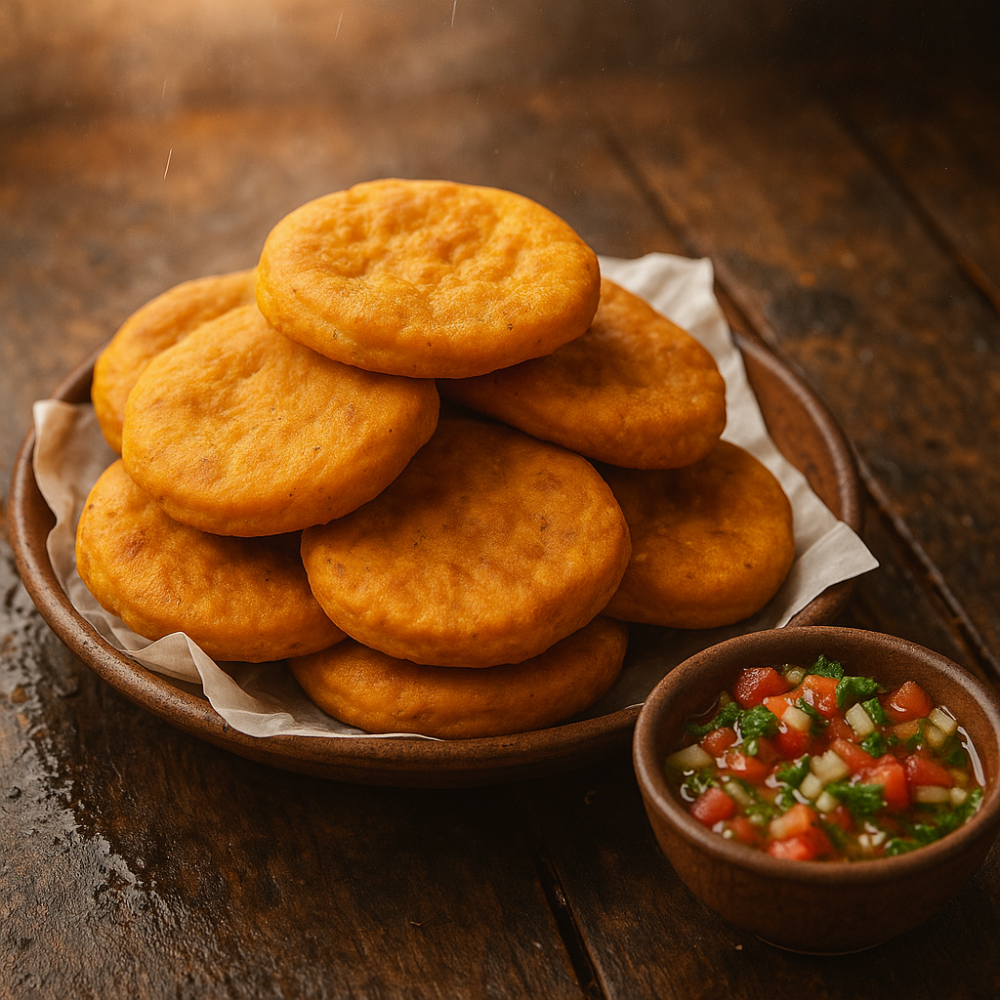

Sopaipillas con Zapallo

Descripción: Receta tradicional chilena perfecta para días fríos. Crujientes por fuera, suaves por dentro, y deliciosas con pebre o chancaca.
Ingredientes:
- 2 tazas de harina
- 1 taza de zapallo cocido y molido
- 2 cucharadas de manteca o margarina
- 1 cucharadita de sal
- 1 cucharadita de polvo de hornear
- Aceite para freír
Preparación:
- Mezcla la harina con el polvo de hornear y la sal.
- Agrega el zapallo molido y la manteca derretida.
- Amasa hasta lograr una masa suave y homogénea.
- Estira con uslero y corta en círculos.
- Fríe en aceite caliente hasta dorar.
Información Nutricional (por unidad aprox):
- Calorías: 150
- Carbohidratos: 18g
- Grasas: 7g
- Proteínas: 2g
Tiempo estimado: 45 minutos
Dificultad: Fácil